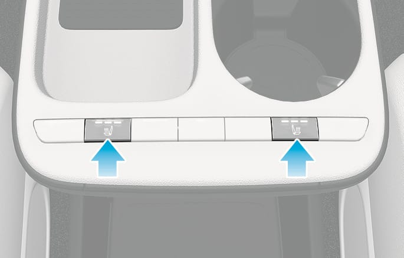
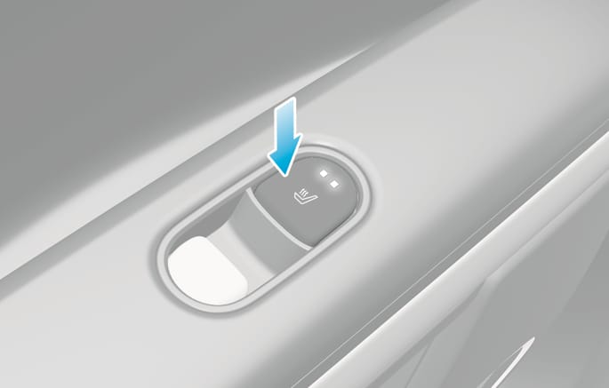

열선 시트
기온이 낮을 때 히터와 함께 열선 시트를 사용하십시오.
앞좌석 열선 시트 버튼

2C_FrontSeatWarmerSwitchTypea
뒷좌석 열선 시트 버튼

2C_RearSeatVentilationSwitchTypeb
차량의 시동을 건 후 열선 시트 버튼을 누르십시오.
-
버튼을 누를 때마다 강-중-약-꺼짐 순으로 작동 상태가 변경됩니다.
-
저온 화상을 방지하기 위해 일정 시간이 지나면 열선 시트의 온도 단계가 자동으로 낮아집니다. 온도 단계를 다시 선택하려면 열선 시트 버튼을 누르십시오. 수동으로 온도 단계를 선택한 후 일정 시간이 지나면 다시 자동으로 변경됩니다.
-
시동을 껐다 걸면 열선 시트가 꺼진 상태로 유지됩니다. 단, 운전석 공조 자동 제어 기능이 켜진 경우 내/외부 온도에 따라 열선 시트 기능이 자동 제어됩니다(설정 > 차량 > 시트 > 운전석 시트 열선/통풍).
-
가급적 열선 시트와 히터를 함께 사용하십시오. 히터를 끈 상태로 열선 시트를 장시간 사용하면 열선 시트 성능이 저하될 수 있습니다.